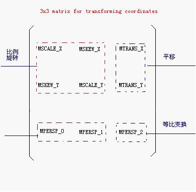
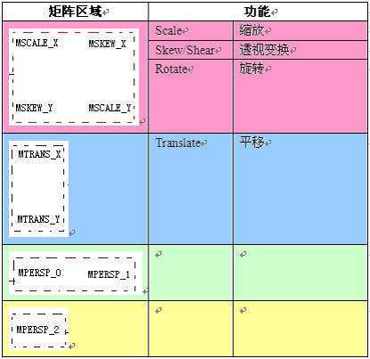

Matrix ，中文里叫矩阵，高等数学里有介绍，在图像处理方面，主要是用于平面的缩放、平移、旋转等操作。
在 Android 里面， Matrix 由 9 个 float 值构成，是一个 3*3 的矩阵。

MSCALE_X：水平缩放
MSCALE_Y：垂直缩放
MSKEW_X，MSKEW_Y：透视变换
MTRANS_X：水平平移
MTRANS_Y：垂直平移

Matrix 的操作，总共分为translate （平移），rotate （旋转），scale（缩放）和skew （倾斜）四种，每一种变换在Android 的API 里都提供了 set, post和pre 三种操作方式,除了translate，其他三种操作都可以指定中心点。
set是直接设置Matrix 的值，每次set一次，整个Matrix 的数组都会变掉。
post 是后乘，当前的矩阵乘以参数给出的矩阵。可以连续多次使用post，来完成所需的整个变换。例如，要将一个图片旋转 30度，然后平移到(100,100)的地方，那么可以这样做:
Matrix m = new Matrix(); m.postRotate(30 ); m.postTranslate(100 , 100 );
pre 是前乘，参数给出的矩阵乘以当前的矩阵。所以操作是在当前矩阵的最前面发生的。例如上面的例子，如果用pre 的话，就要这样:
Matrix m = new Matrix(); m.setTranslate(100 , 100 ); m.preRotate(30 );
旋转、缩放和倾斜都可以围绕一个中心点来进行，如果不指定，默认情况下，是围绕(0,0)点来进行。
import android.content.Context;
import android.graphics.Bitmap;
import android.graphics.Canvas;
import android.graphics.Matrix;
import android.graphics.Rect;
import android.graphics.drawable.BitmapDrawable;
import android.util.DisplayMetrics;
import android.view.MotionEvent;
import android.view.View;
public class MyView extends View {
private Bitmap mBitmap;
private Matrix mMatrix = new Matrix();
public MyView(Context context) {
super (context);
initialize();
}
private void initialize() {
Bitmap bmp = ((BitmapDrawable)getResources().getDrawable(R.drawable.show)).getBitmap();
mBitmap = bmp;
mMatrix.setScale(100f/bmp.getWidth(), 100f/bmp.getHeight());
//平移到（100，100）处
mMatrix.postTranslate(100 , 100 );
//倾斜x 和y轴，以（100，100）为中心。
mMatrix.postSkew(0 .2f, 0 .2f, 100 , 100 );
}
@Override protected void onDraw(Canvas canvas) {
// super.onDraw(canvas); //如果界面上还有其他元素需要绘制，只需要将这句话写上就行了。
canvas.drawBitmap(mBitmap, mMatrix, null );
}
}